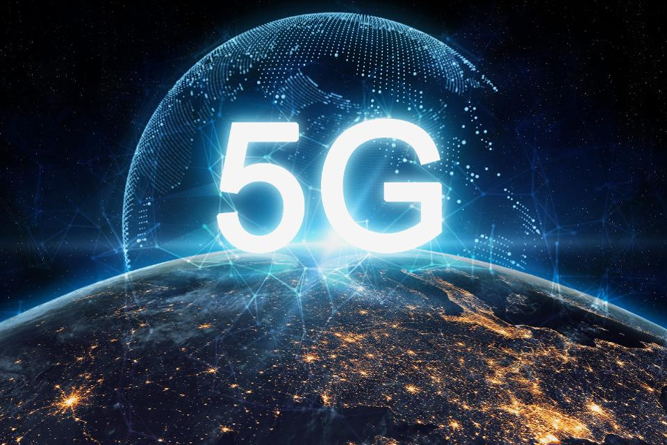

Sobre o 5G
Post #1
O 5G é o próximo passo evolutivo para a banda larga sem fio. Sua missão é elevar, e muito, as potencialidades da rede atual, conhecida como 4G, alçando a banda larga móvel a altíssimos padrões de velocidade de conexão e de usuários simultâneos. Em resumo, as redes 5G prometem aos seus futuros usuários uma cobertura mais ampla e eficiente, maiores transferências de dados, além de um número significativamente maior de conexões simultâneas. As redes da 4ª geração, utilizadas atualmente em algumas regiões do Brasil, são capazes de entregar uma velocidade média de conexão de, aproximadamente, 33 Mbps. Estima-se que o 5G será capaz de entregar velocidades 50 a 100 vezes maiores, podendo alcançar até 10 Gbps.